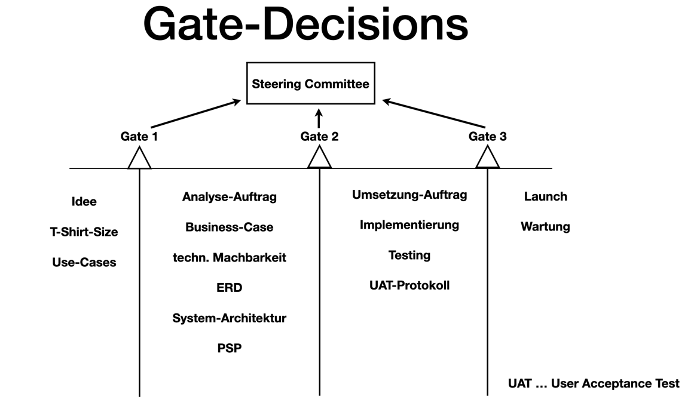
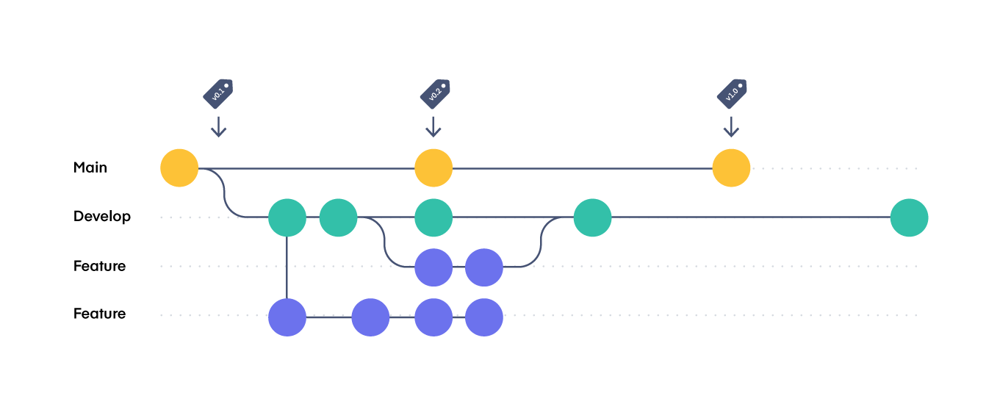
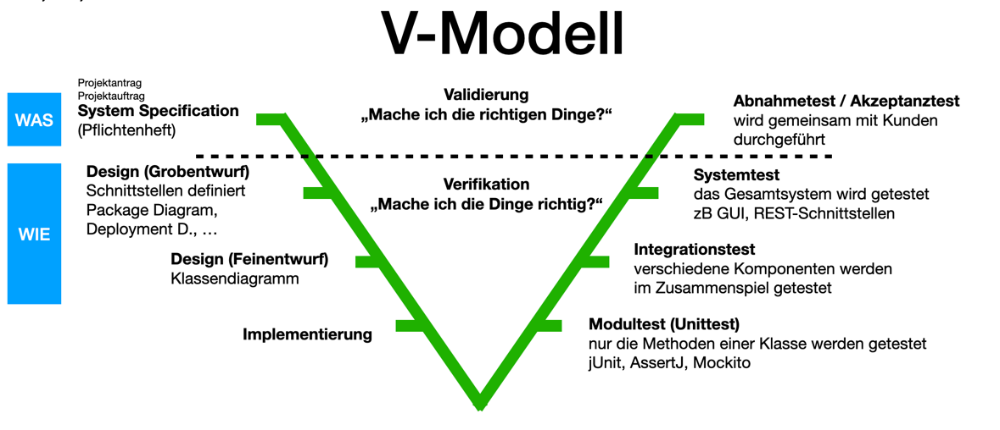
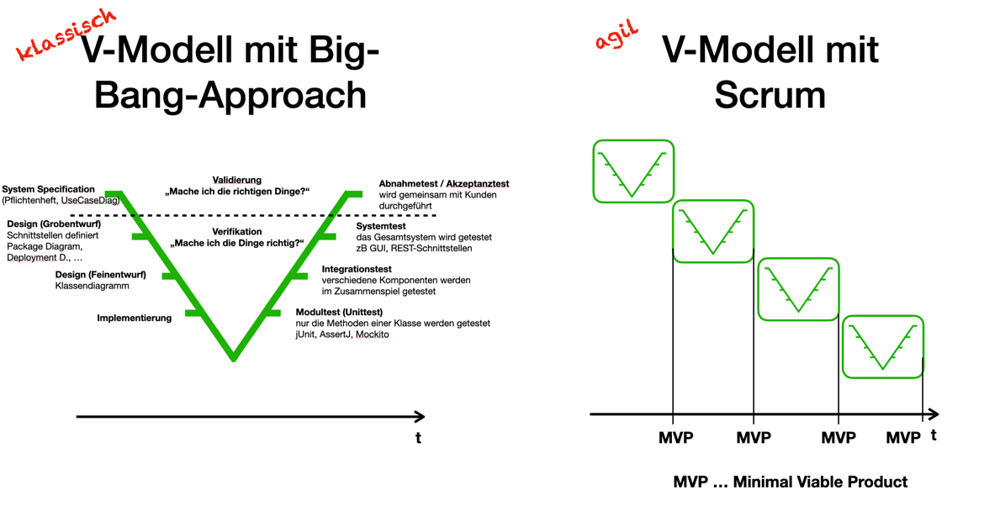
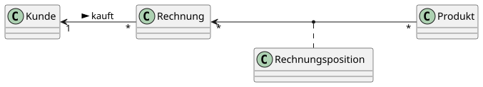
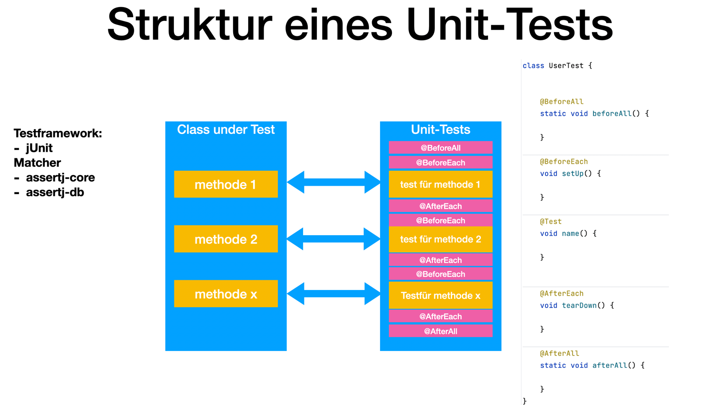

1. 2024-10-07
-
Projekte werden mit T-Shirt-Size geplant
-
S
-
M
-
L
-
XL
-
-
Steering Commitee
-
Management
-
Software-Architekten
-
-
Milestones vs Gate-Decisions
-
Milestones sing keine Gate-Decisions
-

1.3. 2024-10-21 - Virtualisierung mit Docker
Virtualisierung bezeichnet in der Informatik die Nachbildung eines Hard- oder Software-Objekts durch ein ähnliches Objekt vom selben Typ mit Hilfe einer Abstraktionsschicht. Dadurch lassen sich virtuelle (d. h. nicht-physische) Geräte oder Dienste wie emulierte Hardware, Betriebssysteme, Datenspeicher oder Netzwerkressourcen erzeugen. Dies erlaubt es etwa, Computer-Ressourcen (insbesondere im Server-Bereich) transparent zusammenzufassen oder aufzuteilen, oder ein Betriebssystem innerhalb eines anderen auszuführen. Dadurch können u. a. mehrere Betriebssysteme auf einem physischen Server oder „Host“ ausgeführt werden. [wikipedia]
4. 2025-01-20 - Docker Compose
4.1. Übung: docker-compose
-
Erstelle ein docker-compose.yaml File um folgendes System zu erstellen
-
nginx
-
quarkus-backend
-
Im nginx wird eine website gehosted die per rest auf das quarkus-backend zugreift. Ein HTML-Formular wird angezeigt, welches einen Namen entgegennimmt und diesen an das quarkus-backend sendet. Das quarkus-backend gibt den Namen zurück und loggt ihn auf die Console.
5. 2025-03-10 - Github Actions
5.2. Github Actions Website
Bei Fragen über Github Actions, auf dieser Website nachlesen.
6. 2025-01-27 - Git Wiederholung
6.3. Git Branching Strategy

| Something important |
-
Ctrl+Alt+T - Open Terminal
1
2
3
4
5
6
7
8
9
10
11
12
@Path("/hello")
public class GreetingResource {
@POST
@Consumes(MediaType.APPLICATION_FORM_URLENCODED)
public String hello(
@FormParam("name") String name (1)
) {
Log.info(name);
return String.format("Hello, %s!", name);
}
}
| 1 | FormParam wird verwendet, um HTML-Formular-Elemente einzulesen |
Unresolved directive in index.adoc - include::../../labs/rest-demo/src/main/java/at/htl/GreetingResource.java[tag=post-request]|
Feeding the Werewolves
While werewolves are hardy community members, keep in mind the following dietary concerns:
|
7. 2025-03-24


7.2. Testen mit assertj-db


-
assertj-db in pom.xml eintragen
<dependency> <groupId>org.assertj</groupId> <artifactId>assertj-db</artifactId> <version>3.0.0</version> <scope>test</scope> </dependency> -
jdbc-Verbindung von unserer Testklasse zur Datenbank erstellen
-
entweder wird eine "normale" jdbc-Verbindung erstellt und in eine AssertDbConnectionFactory übergeben.
conn = AssertDbConnectionFactory.of(dataSource).create(); -
Bei Verwendung von Quarkus wird eine AgroalDatasource injiziert.
@Inject AgroalDataSource ds;
-
-
Inhalt einer Tabelle auf der Console ausgeben
Table voucherTable = new Table(ds, "voucher"); output(voucherTable).toConsole(); -
Testfall ausführen
@Test void t010_createGroups_Ok() { // Arrange groupRepository.deleteAll(); // Act Map<Character, Group> groups = t.createGroups("ABCDEF"); // Assert // check table Table table = new Table(ds, "T_GROUP"); output(table).toConsole(); assertThat(table).hasNumberOfRows(6) .column("G_GROUP") .value().isEqualTo('A') .value().isEqualTo('B') .value().isEqualTo('C') .value().isEqualTo('D') .value().isEqualTo('E') .value().isEqualTo('F'); // check Map org.assertj.core.api.Assertions.assertThat(groups).hasSize(6); org.assertj.core.api.Assertions.assertThat(groups).containsOnlyKeys('A', 'B', 'C', 'D', 'E', 'F'); org.assertj.core.api.Assertions.assertThat(groups.values()) .usingElementComparator((t1, t2) -> t1.groupLetter.compareTo(t2.groupLetter)) .contains( new Group('A'), new Group('B'), new Group('C'), new Group('D'), new Group('E'), new Group('F') ); }
8. 2025-04-28
-
Frage: Warum müssen Tests immer wieder durchgeführt werden?
-
Antwort: Bei der Entwicklung von neuen Teile der Software kann es passieren, dass bestehende Teile der Software nicht mehr funktionieren., dh sogenannte Nebeneffekte (side-effects) verhindern, das bestehdne Teile der Software weiterhin funktionieren. Man spricht hierbei von Regressionstests.
9. 2025-05-05
9.1. uber-jar
-
Ein JAR-File,
-
das alle Abhängigkeiten enthält
-
sowie ein manifest.xml, in dem die Klasse mit der main-Methode angegeben ist
-
9.3. scope in pom.xml
-
scope: compile ist der Standardwert, wird in jedes Jar hineinkompiliert
-
scope: test wird nur für Tests benötigt
10. 05-05-2025 - Mitschrift
10.1. uber-jar
Ein JAR-File, das alle Abhängigkeiten enthält, sowie ein Manifest XML, in dem die Klasse mit der main-Methode angegeben ist.
10.2. dependency
Das sind Libraries in dem Methoden drinnen sind, die wir für unser Projekt brauchen, zb. Jackson-Marshalling: konvertieren von java-objekten in json
10.3. docker-compose
verwendet zum orchestrieren von Containern, es läuft auf einem eigenem Dockernetzwerk, jeder Container hat eine eigene IP, (Frontend: 10.0.0.1, Backend: 10.0.0.2, Datenbank: 10.0.0.3). Sie greifen aufeinander zu mit ihrem Namen, den man in der .yaml vergeben hat.
10.4. Dockerfile
Baut ein Docker-Image. wir versuchen so wenig als möglich mit eigenen Dockerfiles zu arbeiten, bei möglichkeit verwenden wir eine fertige File.
10.5. Multi-stage-building
Wenn in einer Dockerfile mehrere FROM sind, nennt man es Multistaged.
-
RUN mvn -B(es gibt keine Rückfragen) -Dskiptests (bei -D kommt danach immer ein Parameter mit einem Befehl) package ( es wird ein JAR-File erstellt)
-
FROM ladet ein OS oder JAVA runter. mit "as builder" kann man auf "builder" zugreifen.
-
WORKDIR setzt ein Verzeichnis als Arbeitsverzeichnis
-
COPY --from=builder /usr/local/src/vehicle/target/vehicle-*-runner.jar /opt/backend.jar. Dieser Befehl nimmt alle Versionen und benennt es in backend.jar um.
mit java -jar started man eine JAR-File.
10.6. DEV_SERVICES
startet eigene temporäre testfälle. Auf Testcontainers kann man sich dafür container holen.
10.7. application.properties
-
prod-Mode: Verwendet die gebaute JAR-Datei (z. B. uber-jar oder native).Keine Hot-Reloads oder Dev-Tools.
-
test-Mode: Startet die Anwendung in einer isolierten Umgebung für Unit- und Integrationstests. Nutzt Testdaten und test-spezifische Dienste.
-
dev-Mode: Quarkus wird mit Maven gestartet (mvn quarkus:dev). Hot-Reload: Änderungen im Code oder in application.properties wirken sofort. Zusätzliche Dev-Tools und Fehlermeldungen sind aktiviert.
wird mit %mode vor den Statements in der application.properties hinzugefügt. z.B."%prod.quarkus.package.jar.type=uber-jar"
10.8. dockerignore
wir wollen so wenig wie möglich in den build context kopieren, deshalb kann man verhindern das gewisse dateien mitkopiert werden. Beispiel: (" * " , "!** / *.java") es werden nur das src-Verzeichnis und die pom.xml in den docker-context kopiert.
" * " : Alle files werden ausgewählt. "!** / *.java": Es werden alle nicht .java Files ignoriert.
-
docker build: greift auf das Dockerfile zu.
<scope> in pom.xml: Gültigkeitsbereich, zb <scope>test<scope> nur in test mode verwendbar. Der Standartwert ist <scope>compile<scope>, wird in jedes Jar hineinkompiliert.
10.9. Versionierung
-
semantische Versionierung: x.y.z.
Major: neue Funktionalitäten die nicht mehr kompatibel mit der vorherigen Version ist. Man muss Clients wahrscheinlich updaten. Minor: neue Funktionalitäten, bei denen die kompatibilität nicht gestört ist. Patch: kleine Bug fixes. -
Calver: Versionierung mit dem Datum. z.b. 2024.10.07.1 (Jahr.Monat.Tag.Version). Auf Calver zu finden